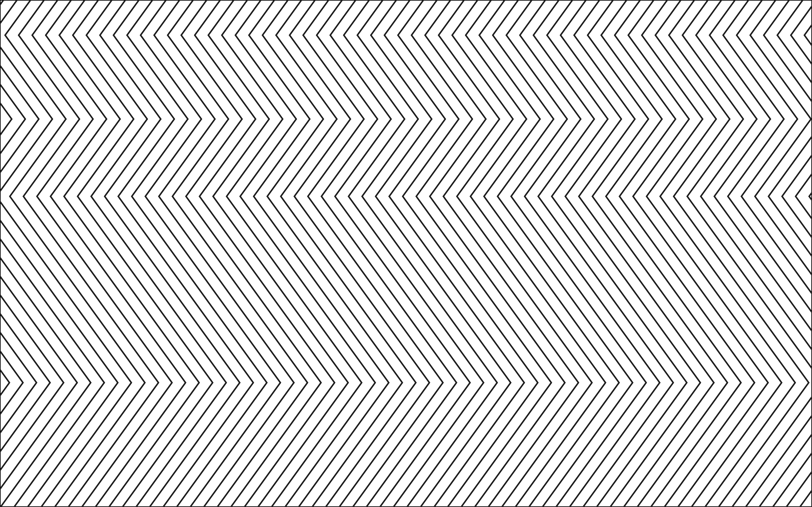

Press the button when you are ready and let the treatment run for approximately 10 seconds. scroll down and press the button to go back to Home.
Congrats!!!
Your Monitor is cured now!!!
Start treatment